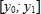

Статистичні ряди розподілу
У попередньому підрозділі ми досліджували вибірки, дані в яких були не згруповані, тобто являли собою просто послідовності чисел. За такою послідовністю можна обчислити певні статистичні показники, але неможливо визначити тенденцію зміни значень досліджуваної ознаки. Наприклад, якщо є відомості про доходи 1000 осіб, можна визначити середній дохід, стандартне відхилення величини доходу, проте важко сказати, як змінюється кількість осіб, що отримують той чи інший дохід, зі зростанням його величини. Щоб дати відповідь на це питання, потрібно згрупувати дані, наприклад визначити кількість людей, що отримують дохід до 1000 грн, від 1000 до 2000 грн, від 2000 до 3000 грн тощо. У результаті ми отримаємо таблицю на кшталт табл. 7.1.
Таблиця 7.1. Відомості про щомісячні доходи населення
Побудована таблиця називається статистичним рядом розподілу. Загалом ряд розподілу – це два набори значень однакової довжини. В одному наборі представлені значення певної ознаки (у табл. 7.1 це величина доходу), а в іншому – частоти, тобто кількості разів, коли під час статистичного спостереження було отримано відповідне значення ознаки. Інакше кажучи, ідеться про розподіл певних об'єктів за певною ознакою. Наприклад, у табл. 7.1 наведено розподіл осіб за величиною доходу. Величина доходу – це ознака, а кількості осіб – частоти.
За рядом розподілу вже можна визначити тенденцію зміни значень досліджуваної ознаки. Так, з табл. 7.1 видно, що з ростом доходу від 0 до 2000 грн кількість осіб, які отримують цей дохід, зростає, а коли дохід перевищує 2000 грн, тенденція зворотна: що вище дохід, то менша кількість людей його отримує.
Атрибутивні та варіаційні ряди розподілу
Розрізняють атрибутивні та варіаційні ряди розподілу. Якщо за основу групування узята якісна ознака, то це атрибутивний ряд розподілу (розподіл за видами продукції, професіями, статтю, національною або географічною приналежністю тощо). Якщо ряд розподілу побудований за кількісною ознакою, то такий ряд є варіаційним (за розміром доходу, стажем роботи, числом працівників на підприємстві тощо).
Наприклад, наведений у табл. 7.1 ряд розподілу осіб за доходом є варіаційним, а ряд розподілу осіб за професіями, який наведено у табл. 7.2, – атрибутивним.
Таблиця 10.2. Приклад атрибутивного ряду розподілу
Дискретні та інтервальні ряди розподілу
Варіаційні ряди розподілу, у свою чергу, поділяються на дискретні та інтервальні. У дискретному ряді розподілу частоти зіставляються окремим значенням ознаки, а в інтервальному – інтервалам таких значень. Так, ряд розподілу у табл. 7.1 є інтервальним.
У табл. 7.3 наведено приклад дискретного ряду розподілу – це розподіл кількостей випадання чисел на гральній кістці. Значення ознаки у дискретному ряді називають варіантами.
Таблиця 7.3. Приклад дискретного ряду розподілу
Інтервальний ряд розподілу можна перетворити на дискретний, взявши за значення варіант середини інтервалів. Так, у табл. 7.4 наведено дискретний ряд, який побудовано за інтервальним рядом, поданим у табл. 7.1. Зверніть увагу: хоча останній інтервал мав вигляд [8000;∞), за його середину ми взяли число 8500, припустивши, що відстань між двома останніми значеннями ознаки дорівнює відстані між передостанніми значеннями:
7500 - 6500 = 1000; 7500 + 1000 = 8500.
Таблиця 7.4. Дискретний ряд розподілу осіб за доходами
Очевидно, що атрибутивні ряди розподілу можуть бути тільки дискретними.
Абсолютні та відносні частоти
В усіх розглянутих нами рядах розподілу наведено абсолютні частоти у які визначають, скільки разів зустрічається певне значення ознаки. Проте часто в рядах розподілу вказують і відносні частоти, що дорівнюють часткам, які припадають на ту чи іншу частоту в загальному об'ємі вибірки. Приклад ряду розподілу з відносними частотами наведено в табл. 7.5.
Таблиця 7.5. Ряд розподілу з відносними частотами
Тут xi – варіанти, mi – абсолютні частоти, і = 1, 2,..., k; k – кількість різних за значенням варіант; n – об'єм вибірки.
У табл. 7.6 наведено ряд розподілу з відносними частотами, побудований на основі даних з табл. 7.1.
Таблиця 7.6. Ряд розподілу щомісячних доходів населення з відносними частотами
Побудова рядів розподілу
Припустимо, що результати статистичних спостережень необхідно згрупувати, побудувавши ряд розподілу. Ця операція виконується у кілька етапів. Насамперед необхідно визначити, який ряд розподілу будувати – інтервальний чи дискретний. Критерій такий: якщо ознака може набувати лише невелику кількість різних значень (у межах одного-двох десятків), будуйте дискретний ряд розподілу, інакше – інтервальний.
ПРИМІТКА. Не плутайте випадок, коли ознака представлена у вибірці невеликою кількістю значень, з випадком, коли вона може набувати невеликої кількості значень у генеральній сукупності. Наприклад, якщо є вибірка з відомостями про зріст семи людей, то це ще не означає, що величина «зріст» може мати лише сім значень. А якщо є вибірка днів тижня, то величина «день тижня» дійсно може набувати лише семи різних значень.
Для побудови дискретного ряду розподілу слід виписати всі можливі значення ознаки, а потім підрахувати, скільки разів кожне з них трапляється у вибірці – це будуть частоти. У Microsoft Excel для підрахунку частот слід застосувати функцію COUNTIF (рос. СЧЕТЕСЛИ), про яку йшлося в розділі 3. Принцип побудови інтервального ряду розподілу розглянемо детальніше.
Отже, для побудови за вибіркою x1, ..., xn ряду розподілу, що складається з m рівних інтервалів, необхідно виконати такі кроки.
- Визначити найбільшу та найменшу варіанти – xmin та хmах.
- Визначити величину інтервалу
- Визначити межі інтервалів , , ..., за формулами:
Тобто нижня межа першого інтервалу дорівнює найменшій варіанті, а кожна наступна межа більша за попередню на h.
- Підрахувати, скільки варіант потрапляє у кожен інтервал – це і будуть частоти. В Excel це можна зробити за допомогою функції FREQUENCY (рос. ЧАСТОТА), яка має два аргументи:
FREQUЕNСУ(діапазон_ вибірки;діапазон_меж_ інтервалів)
Перший аргумент – це діапазон, що містить вибірку, а другий – діапазон усіх меж інтервалів, за винятком та (тобто усіх меж між інтервалами). Результатом функції буде набір частот, що відповідають кожному інтервалу. Ви вперше стикаєтеся з функцією, результатом якої є діапазон значень, а не окреме значення. Її і вводити потрібно дещо інакше, ніж інші функції. А саме, слід виділити весь діапазон, де міститимуться результати, ввести формулу функції та натиснути клавіші Ctrl + Shift + Enter.
Приклад використання функції FREQUENCY наведено на рис. 7.1, а.
Рис. 7.1. Побудова інтервального ряду розподілу: а – результати обчислень; б – введення функції
Тут вибірка міститься в діапазоні А2:А21, xmin = 0, хmах = 100 і нам потрібно побудувати ряд розподілу з п'яти інтервалів. Межами між інтервалами будуть числа 20, 40, 60, 80 – вони містяться в діапазоні D2:D5. Функцію FREQUENCY введено в діапазон G2:G6, де ми бачимо результати її обчислення, тобто частоти. Процес введення функції FREQUENCY зображено на рис. 7.1, б.
Графічне подання рядів розподілу
Тенденції зміни частот зручно вивчати, коли ряд розподілу подано у графічному вигляді. Найчастіше для зображення рядів розподілу застосовують гістограму, а за необхідності графічно зобразити відносні частоти – кругову діаграму. На гістограмі значення ознаки відкладаються на осі х, а частоти – на осі у. Так, на рис. 7.2, а ряд розподілу з табл. 7.1 зображено у вигляді гістограми, а на рис. 7.2, б – у вигляді кругової діаграми. З гістограми відразу видно тенденцію зміни кількості осіб із ростом щомісячного доходу.
Рис. 7.2. Графічне подання ряду розподілу: а – у вигляді гістограми; б – у вигляді кругової діаграми